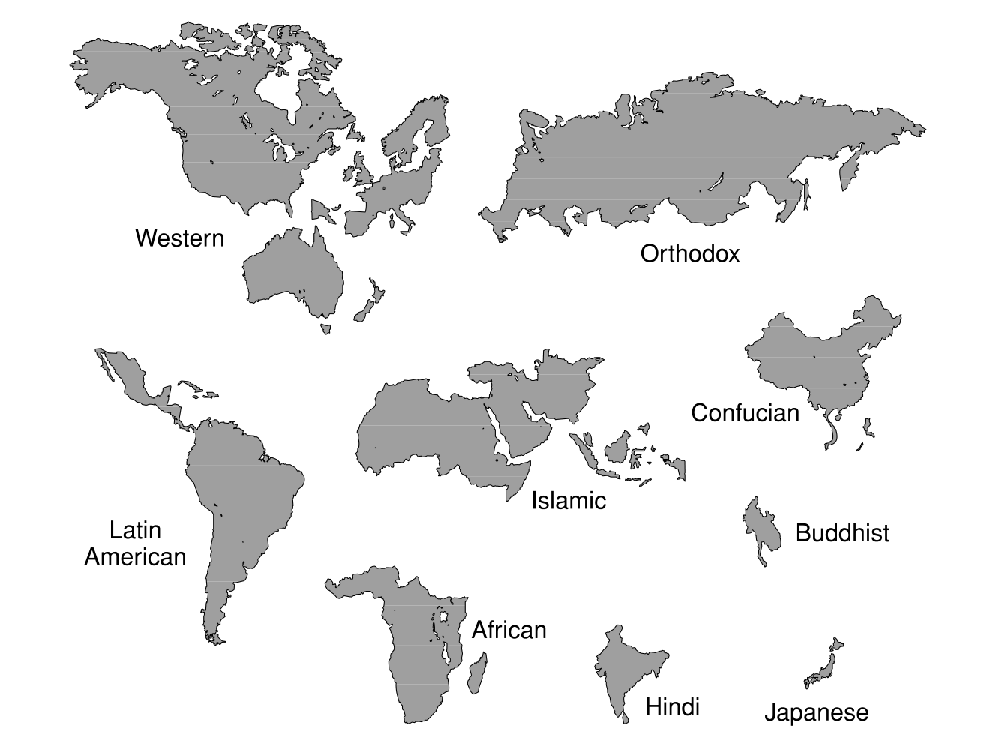
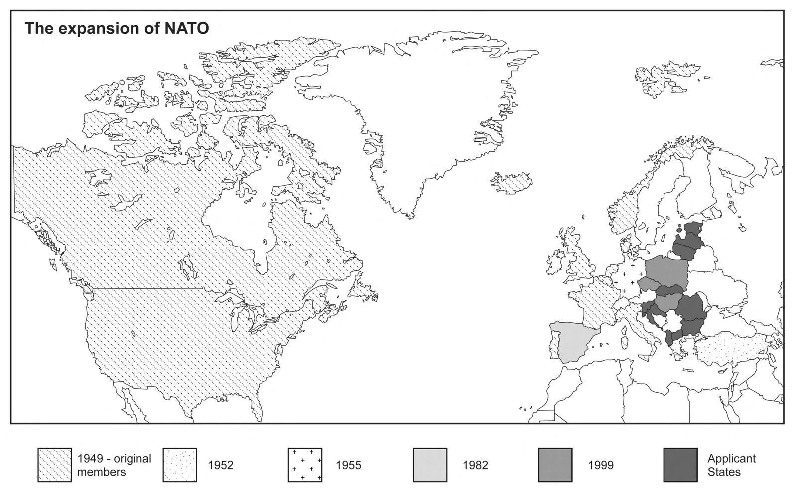
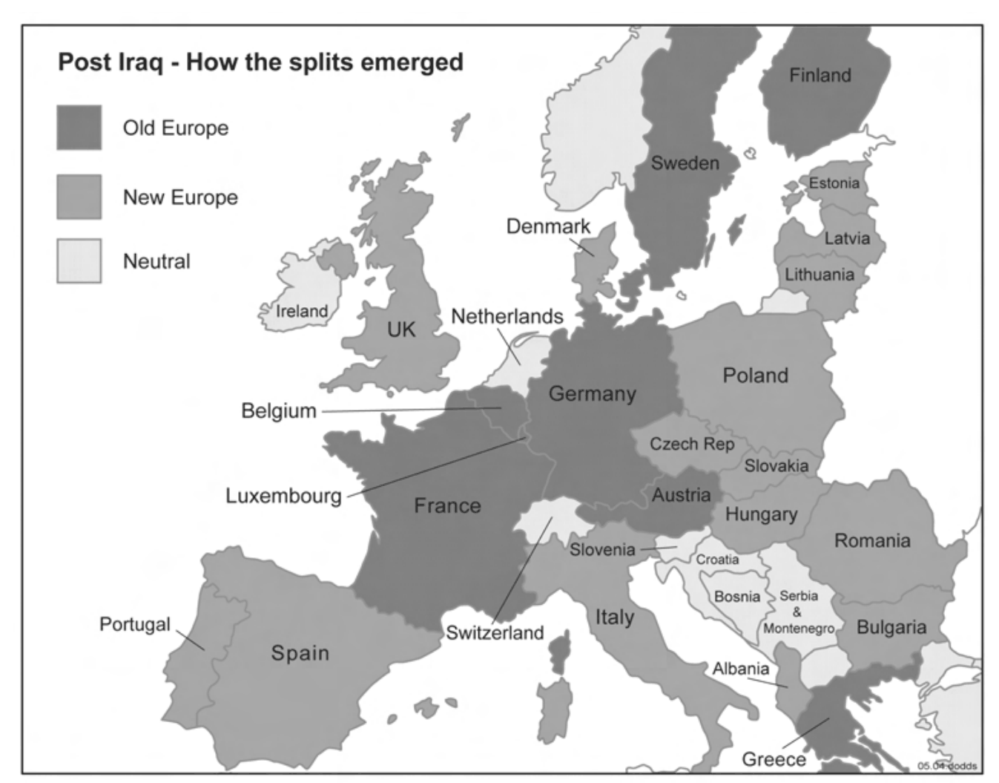
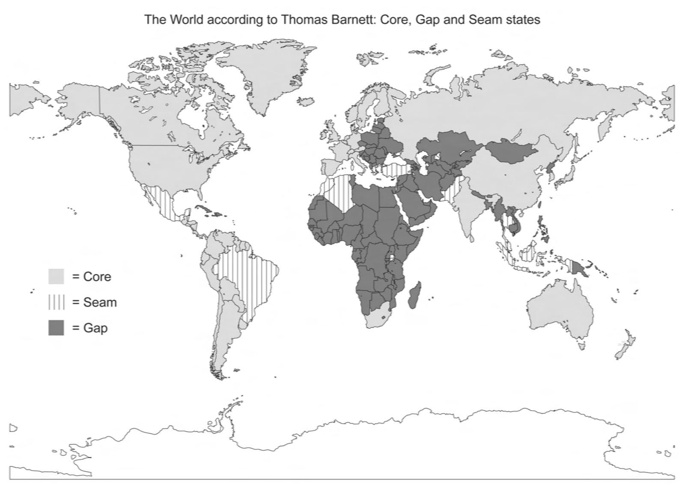
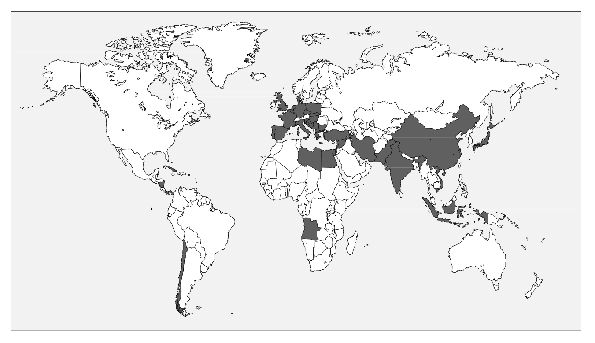
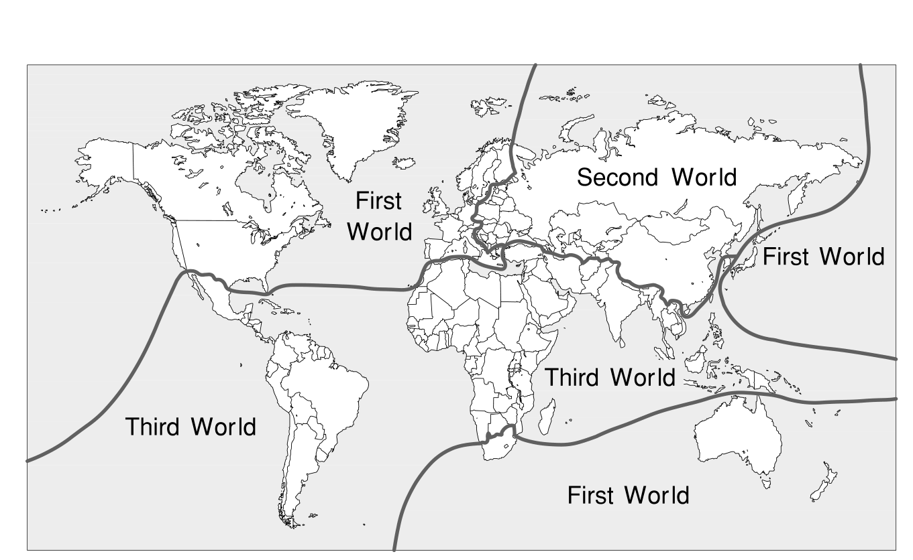
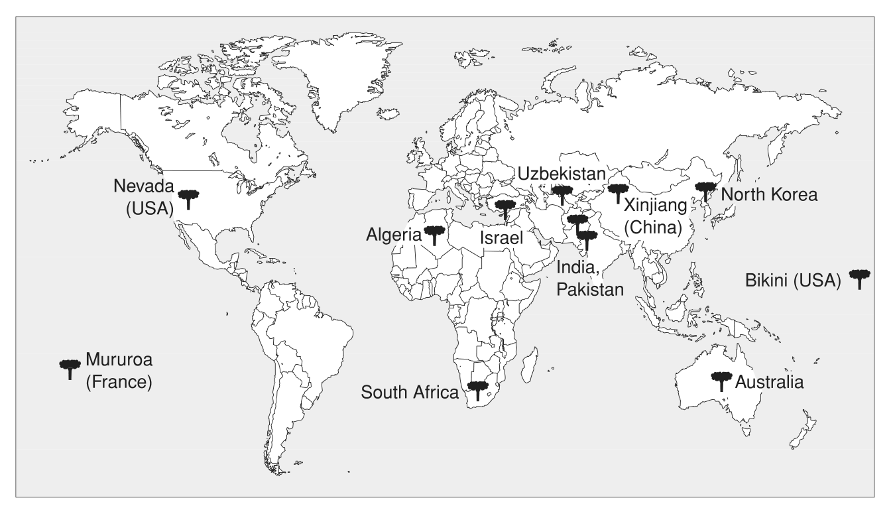
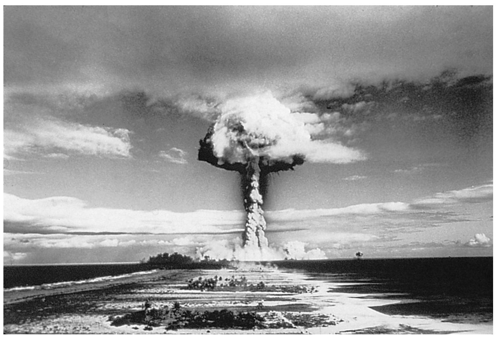
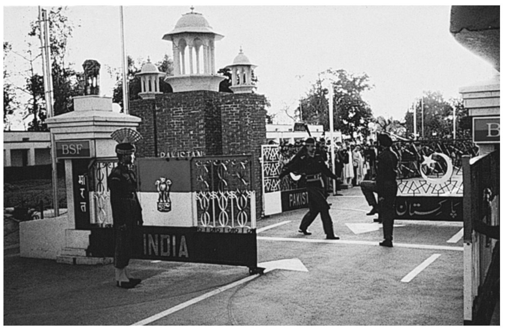

La posición nunca es neutral. Cada movimiento cambia las opciones de los demás —y las tuyas.
Hoy—
Sesión—
Trae contigoLos tres bloques de Dodds y tu control 4
Jueves 17 de septiembre · Salón F-101 · Sesión 08
La globalización del peligro
Hobsbawm terminó con una bomba que obligó a rendirse a un país entero. Dodds empieza exactamente ahí y cambia la pregunta: cuando el peligro deja de tener frente de batalla, ¿quién dibuja las líneas del mundo, quién queda de cada lado y quién decide qué cosa es una amenaza? Hoy trabajamos con lo que leíste: los mapas del libro, las cifras del capítulo 5 y tu control en la mano.
📖 Doddspp. 10—23pp. 50—59pp. 103—123Cierra la unidad II
La lectura de esta sesión
Dodds, tres bloques: los mapas, el apartheid global y la bomba
40 páginas · en inglés · Global Geopolitics: A Critical Introduction
Los tres bloques van de lo general a lo concreto y se leen como una sola pregunta. En el primero, tres maneras rivales de repartir el planeta después de 1989. En el segundo, de dónde sale la expresión «apartheid global» y qué hicieron los países que quedaron atrapados entre los dos bloques. En el tercero, las armas de destrucción masiva como argumento: quién puede tenerlas, quién no, y quién reparte los rótulos.
Referencia (APA 7): Dodds, K. (2005). Global geopolitics: A critical introduction. Pearson Education.
Cita en el texto: (Dodds, 2005, p. 117) · Narrativa: Dodds (2005) sostiene que… (p. 117)
Las páginas de esta página son las del libro impreso, las que están en la esquina de cada hoja del PDF.
Por dónde entrar
Cinco entradas a la misma lectura
No vamos a recorrerlas todas ni necesariamente en este orden. Escoge por dónde empiezas —o deja que el salón lo decida— y ten el libro abierto.
Dodds no ilustra con mapas: discute con ellos. Cada uno reparte el planeta con un criterio distinto —civilizaciones, alianzas militares, conexión a la globalización, ideología, arsenales— y cada uno deja a alguien del lado equivocado de la línea. Míralos seguidos con una sola pregunta encima: ¿dónde cae México en cada uno?
Dodds · 2005
Siete mapas, dos fotografías
Todos salen de las páginas que leíste. Ninguno es una foto del mundo: cada uno es un argumento dibujado, hecho por alguien, en un año concreto, para convencer a alguien de algo. La pregunta no es si el mapa es bonito, sino qué deja fuera y a quién le conviene.
Cómo se mueveCon las flechas ← → o deslizando en el celular. La tecla F abre pantalla completa.
Bloque 1 · mirador 1 · p. 9

El mundo según Huntington. El planeta partido en civilizaciones: occidental, islámica, confuciana, hindú, eslavo-ortodoxa, latinoamericana, africana, japonesa. Después del 11 de septiembre de 2001 este mapa volvió a circular como si fuera una profecía cumplida. Edward Said lo llamó, en respuesta, «choque de ignorancias»: la pluralidad del mundo islámico desaparece en una sola mancha del mapa. Fíjate en cómo aparece América Latina.
Dodds (2005), figura 1.2, p. 9
Bloque 1 · mirador 3 · p. 14

La expansión de la OTAN. El mismo territorio, seis fechas. Cada tono es una tanda de ingreso a la alianza: 1949, 1952, 1955, 1982, 1999 y los que entonces esperaban turno. Un mapa de membresías es también un mapa de garantías de seguridad: quién está adentro del paraguas y quién no. Mira hacia dónde se mueve la frontera oriental y piensa qué se ve desde el otro lado de esa línea.
Dodds (2005), figura 1.3, p. 14
Bloque 1 · mirador 3 · p. 15

Vieja Europa, nueva Europa. Publicado por The Guardian en abril de 2003, recoge una frase del secretario de Defensa estadounidense: dos adjetivos bastaron para partir en dos a un continente entero según quién apoyó la invasión de Irak. Aquí se ve funcionando el argumento de Kagan: una Europa que prefiere la negociación y un Estados Unidos que confía en la fuerza. Un mapa hecho para ganar una discusión.
Dodds (2005), figura 1.4, p. 15 · fuente original: The Guardian, 28 de abril de 2003
Bloque 1 · mirador 4 · p. 20

El mundo según Barnett. Un estratega de la Escuela de Guerra Naval de Estados Unidos parte el planeta en tres: el Core, conectado a la globalización; el Gap, desconectado —al que llama «el agujero de ozono de la globalización»—; y entre ambos, las Seam states, las costuras por donde se pasa de un lado al otro. En esa lista de costuras está México, junto con Brasil, Marruecos, Argelia, Grecia, Turquía, Pakistán, Tailandia, Filipinas e Indonesia. Dodds observa que «se aporta muy poca evidencia para justificar esta selección ecléctica», y que México y Grecia parecen estar ahí solo por su cercanía geográfica a Estados Unidos y a Europa occidental.
Dodds (2005), figura 1.5, p. 20 · la lista de costuras, en la p. 21
Bloque 2 · p. 55

Dónde se peleó realmente la Guerra Fría. Zonas de conflicto entre Estados Unidos y la Unión Soviética, 1948—1988. Las dos superpotencias no se dispararon nunca entre ellas: el mapa muestra los países donde sí se disparó. Corea, Vietnam, Angola, Mozambique, Irán, Guatemala, Chile. La «guerra fría» fue el nombre que se le dio desde el Norte; en estos territorios fue cualquier cosa menos fría.
Dodds (2005), figura 3.1, p. 55
Bloque 2 · p. 60

¿Tres mundos? El signo de interrogación es de Dodds. Primer, Segundo y Tercer Mundo: categorías inventadas por científicos sociales occidentales a principios de los años cincuenta, justo cuando Estados Unidos y la URSS apoyaban bandos opuestos en Corea y Washington derrocaba al gobierno electo de Mosaddeq en Irán. Fíjate qué países quedan en el «Primer Mundo» del hemisferio sur y pregúntate con qué criterio se trazó esa línea.
Dodds (2005), figura 3.2, p. 60
Bloque 3 · p. 109

Dónde se probaron las bombas. Entre 1945 y 1991 se hicieron más de 1 900 explosiones nucleares. Los que más probaron: Estados Unidos (936), la Unión Soviética (715), Francia (192), Reino Unido (44) y China (36). Ahora busca en el mapa dónde ocurrieron: Kazajistán, la Polinesia Francesa, las Islas Marshall, Xinjiang, reservas indígenas de Nevada y el centro de Australia. Ninguna potencia probó en su propia capital.
Dodds (2005), figura 5.2, p. 109
Bloque 3 · p. 106

«¿La imagen que define el siglo XX?» El signo de interrogación también es de Dodds. En Hiroshima murieron unas 70 000 personas de inmediato y en Nagasaki unas 35 000; el total nunca se sabrá, porque muchos sobrevivientes murieron después por la radiación. Tres años más tarde, una comisión recién creada de la ONU inventó una categoría nueva para nombrar lo que había pasado: arma de destrucción masiva.
Dodds (2005), figura 5.1, p. 106
Bloque 3 · p. 118

La frontera indo-pakistaní cerca de Amritsar. Dos ejércitos que se vigilan a metros de distancia sobre una línea trazada en 1947. India detonó su primer artefacto en 1974; el mismo año, Pakistán proponía en la ONU declarar el sur de Asia zona libre de armas nucleares. Los dos países se negaron a firmar el tratado de no proliferación con el mismo argumento: es un tratado que congela un club.
Dodds (2005), figura 5.3, p. 118
Para cerrar el visor
El mapa nunca es el territorio
Siete mapas, siete líneas distintas, y cada una fue dibujada por alguien con una idea de quién es peligroso. En cuatro de ellos México aparece; en tres, ni siquiera se le menciona.
Si te clasifican como «costura» del sistema, ¿qué le pasa a tu prima de riesgo, a tus seguros, a tus visas, a tu cadena de suministro?
¿Qué mapa usarías tú para explicar dónde está México hoy? Dibújalo: es una participación.
01 / 11
Haz clic en el visor y muévete con ←→. F abre pantalla completa, Inicio y Fin saltan al principio y al final. En el celular, desliza con el dedo.
Los mismos mapas, sueltos
Para verlos de cerca
Ábrelos a pantalla completa si quieres seguir una frontera con el dedo, o descárgalos para tu control.
Cada tarjeta trae una palabra o una frase que está en el libro. Toma una —la que te llame o la que te toque en el sorteo—, ponla al frente del salón y desarróllala en voz alta: de dónde sale, qué está diciendo Dodds con eso y qué te parece a ti. Cuando termines, dale clic a la tarjeta: del otro lado está lo que dice el libro y la página exacta. Cada hilo que desarrolles cuenta como participación.
Si prefieres traer el tuyo: cualquier cita que hayas comentado en tu control funciona igual de bien. El hilo no tiene que salir de estas tarjetas — tiene que salir del libro y tener página.
Los datos, tal como están en el libro
Las cuentas del capítulo
Ninguna de estas tablas dice nada por sí sola: todas son datos que Dodds deja sueltos en el texto, puestos uno junto a otro. Lo interesante aparece al cruzarlos — y ese cruce lo haces tú.
1 · Los cuatro miradores del capítulo 1 (pp. 6—22)
Mirador
Quién lo firma
Cómo parte el mundo
Dónde queda México
El fin de la historia y el choque de civilizaciones pp. 6—10
Fukuyama · Huntington
En grandes bloques culturales que chocan entre sí
Dentro de una «civilización latinoamericana» descrita como apéndice atrasado pero confiable de Occidente
Pax americana pp. 10—13
Ignatieff · Sardar y Davies
Un imperio sin colonias que se niega a llamarse imperio
Como parte de la expansión continental del siglo XIX: tierras que «sucumbieron» al proceso
Poder y persuasión pp. 13—18
Kagan
Europa kantiana contra Estados Unidos hobbesiano
Fuera del cuadro
Core y Non-Integrating Gap pp. 18—22
Barnett
Conectados, desconectados y las costuras entre ambos
Seam state, con Brasil, Marruecos, Argelia, Grecia, Turquía, Pakistán, Tailandia, Filipinas e Indonesia
Cuatro maneras de dibujar el mismo planeta en las mismas trece páginas. Tres de ellas fueron escritas por estadounidenses con acceso directo al gobierno de su país. ¿Cuál de los cuatro describe mejor el mundo en el que vas a trabajar?
2 · Las cifras del apartheid global (pp. 50—52)
Dato
Cifra
De dónde sale
Países con caída de su ingreso nacional en los noventa
más de 50
Informe de Desarrollo Humano, ONU, 2003
Niños que mueren cada día por enfermedades prevenibles
30 000
Informe de Desarrollo Humano, ONU, 2003
Ingreso del 1 % más rico del mundo
igual al del 57 % más pobre
Informe de Desarrollo Humano, ONU, 2003
Niños muertos de diarrea durante los noventa
más de 13 millones
Enfermedad evitable con agua limpia
Personas contagiadas de sida en África
28 millones
Informe de Desarrollo Humano, ONU, 2003
Población de India en pobreza extrema
al menos 350 millones
Dodds, p. 52
Reparto del planeta según Thomas Schelling
1/5 y 4/5
Un quinto rico y de piel más clara; cuatro quintos pobres y de piel más oscura — y el quinto rico con superioridad militar
Con estas cifras sobre la mesa, vuelve a la pregunta que traía tu control: «apartheid global», ¿describe el mundo o exagera? Vale la pena votar antes de leer la tabla y otra vez después.
3 · Quién tiene la bomba y quién aparece en las listas (pp. 104 y 121)
Estado
¿Tiene armas nucleares?
¿«Eje del mal», febrero 2002?
¿Informe del Pentágono, marzo 2002?
Estados Unidos
Sí
—
—
Rusia
Sí
—
Sí
Francia
Sí
—
—
Reino Unido
Sí
—
—
China
Sí
—
Sí
India
Sí
—
—
Pakistán
Sí
—
—
Israel
Sí
—
—
Corea del Norte
Sí
Sí
Sí
Irán
—
Sí
Sí
Irak
—
Sí
Sí
Libia
—
—
Sí
Siria
—
—
Sí
El informe del Pentágono de marzo de 2002 listaba siete países que podían recibir un ataque nuclear preventivo estadounidense. Cruza las tres columnas y cuenta: seis Estados tienen armas nucleares y no aparecen en ninguna lista de amenaza; cuatro aparecen en las listas sin tenerlas. Ninguna de las dos listas la redactó un organismo internacional.
4 · Quién hizo los ensayos (p. 109)
País
Ensayos
Estados Unidos
936
Unión Soviética
715
Francia
192
Reino Unido
44
China
36
… y dónde se hicieron (p. 109)
Territorio
Ensayos
Kazajistán
467
Polinesia Francesa
167
Islas Marshall
66
Xinjiang, China
36
Nevada y el centro de Australia
reservas indígenas
Más de 1 900 explosiones entre 1945 y 1991. Pon las dos columnas una junto a la otra y aparece lo que el capítulo quiere que veas: ninguna potencia probó en su propia capital. Las bombas se diseñaron en un lugar y se detonaron en otro, casi siempre en territorios de gente sin voto en la decisión.
Las preguntas del libro
Dodds pregunta primero
Cada capítulo abre con las preguntas que se va a hacer y cierra con las que te deja a ti. Aquí están todas las de los tres capítulos que leíste, con la página en la que aparecen. Sirven para hablar hoy, para tu próximo control y para el trabajo final.
Capítulo 1 · abre · p. 3
Representar la geopolítica
¿Qué es la geopolítica?
¿Cómo funciona la geopolítica?
¿Qué papel juegan las visiones geopolíticas?
¿Cómo han entendido los comentaristas estadounidenses la era posterior a la Guerra Fría?
Capítulo 1 · cierra · p. 23
Lo que te deja
¿Cómo han reimaginado el mundo los comentaristas políticos estadounidenses después de la Guerra Fría?
¿Por qué se ha acusado a Estados Unidos de ser «imperial»?
¿De verdad el terrorismo sustituyó al comunismo como la principal amenaza para los países del Norte?
¿El lado militar de la política mundial pesa hoy más que durante la Guerra Fría (1945—1989/90)?
Capítulo 3 · abre · p. 50
Apartheid global y relaciones Norte—Sur
¿La globalización se sostiene, en el fondo, sobre una forma de apartheid espacial?
¿Qué papel jugó el Tercer Mundo durante la Guerra Fría? ¿Cómo intentaron esos Estados resistir la división en bloques?
¿El fin de la Guerra Fría cambió de raíz las relaciones Norte—Sur?
¿Qué factores moldearon la relación entre Estados Unidos y América Latina después de la Guerra Fría?
Capítulo 3 · cierra · p. 72
Lo que te deja
¿Qué nos dice una etiqueta geográfica como «apartheid global» sobre la naturaleza de la globalización?
¿Por qué han empeorado las desigualdades entre el Norte y el Sur global?
¿Por qué se supone que el capital debe circular libremente y las personas no?
¿Para qué sirvió el Movimiento de Países No Alineados? ¿Sigue importando hoy?
¿Por qué terminó en fracaso la reunión de la OMC de septiembre de 2003?
Capítulo 5 · abre · p. 103
La globalización del peligro
¿Por qué tener armas de destrucción masiva trae consecuencias geopolíticas?
¿Cómo intentan los Estados y las organizaciones no estatales controlar la proliferación y los ensayos nucleares?
¿Por qué algunos Estados del Tercer Mundo y varias ONG resistieron los ensayos nucleares?
¿Qué papel juega la competencia regional entre Estados a la hora de fomentar la proliferación?
Capítulo 5 · cierra · pp. 122—123
Lo que te deja
¿Por qué proliferaron las armas nucleares después de 1945?
¿Qué se intentó para controlar —o para resistir— esa proliferación?
¿Por qué invierte Estados Unidos en el escudo antimisiles?
¿Tener armas de destrucción masiva es la mejor protección contra un ataque preventivo de Estados Unidos o de cualquier otra potencia nuclear?
¿Necesita la ONU más fuerza institucional para enfrentar el peligro de la proliferación?
¿El escudo antimisiles mejora o empeora la seguridad global?
Y tres que suelta a media página, sin responderlas
Las incómodas · p. 105
¿Por qué un Estado pequeño como Corea del Norte arriesgaría su aniquilación atacando a Estados Unidos?
Si la Unión Soviética respetó la lógica de la disuasión —no atacar, por las consecuencias para sí misma—, ¿por qué no la respetarían los Estados nucleares pequeños?
¿Para qué necesitaría un grupo terrorista armas de destrucción masiva, si Al-Qaeda usó aviones llenos de combustible?
Dos preguntas más no están en ninguna lista: son los pies de dos figuras. «¿Tres mundos?» (p. 60) y «¿La imagen que define el siglo XX?» (p. 106). En un libro donde nada se titula por casualidad, esos dos signos de interrogación son un argumento.
Para seguir el hilo
Catorce videos que continúan la lectura
Todos salen de la playlist del curso y están ordenados por los tres bloques que leíste. Dodds escribió en 2005: en varios de estos videos vas a ver exactamente el mismo argumento, veinte años después y con otros nombres propios.
La misma operación que hace Dodds con los mapas de Huntington y Barnett, pero con los conflictos de ahora. Doce minutos para ver cómo una guerra se dibuja antes de pelearse.
Barnett dividía el mundo entre conectados y desconectados. Hoy la línea la trazan dos potencias que compiten por la misma red. Es el mapa de la unidad que empieza hoy.
Seis minutos sobre cómo se fabrica una amenaza antes de actuar contra ella. Póntelo al lado de la lista del «eje del mal» y verás el mecanismo completo.
Lo que pasa cuando se inventa una categoría jurídica: la página 18 cuenta que a los capturados en Afganistán se les llamó «combatientes ilegales» y se les llevó a Cuba sin representación legal. Este documental entra al campo dos décadas después, cuando sigue abierto.
La palabra «apartheid» viene de ahí. El documental mira el país treinta años después del fin del régimen: las desigualdades que Dodds despacha en una línea siguen en pie, y la disputa por ellas llega hoy hasta Washington.
Huntington nos puso de apéndice de Occidente y Barnett nos puso de costura. Aquí la región se explica desde adentro. Útil para responder a las dos etiquetas.
La línea que aparece en la fotografía de la página 118: trazada en seis semanas en 1947. De ese corte salen los dos Estados que se negaron a firmar el tratado de no proliferación.
Dodds pregunta por qué un Estado pequeño arriesgaría su aniquilación. Aquí se ve la frontera desde la que se hace esa apuesta, y la gente que vive encima de ella.
Dos países de la tabla: uno en todas las listas de amenaza sin tener la bomba, el otro con la bomba y en ninguna lista. Cuarenta minutos sobre cómo se llegó hasta ahí.
Cómo se frena hoy un programa nuclear: sin inspectores y sin bombardeos, con un programa que destruye centrifugadoras desde adentro. El puente exacto hacia la lectura del martes.
Hacia la unidad III
Para el martes 22 de septiembre
Actividad 5 · The Weaponized World Economy
Henry Farrell y Abraham Newman · Foreign Affairs · 16 páginas · en inglés
Dodds te deja con un peligro que ya no cabe en un mapa. Farrell y Newman te dicen dónde se instaló: en los cables, los bancos y las fábricas por donde pasa el comercio mundial. Su tesis es que la economía global dejó de ser un terreno de competencia y se volvió un arsenal. La comparación con la proliferación nuclear —la que acabas de leer— la hacen ellos mismos, en la página 10.
Bloque 1 · pp. 8—13Bloque 2 · pp. 14—18Bloque 3 · pp. 19—23
El martes 22 nos vemos en A-004: ahí empieza la unidad III, con la interdependencia armamentizada.
Bitácora del curso
Una versión por sesión
Esta página cambia cada vez que cambia la clase: siempre muestra lo esencial del curso y lo que vemos hoy. Lo que ya trabajamos no se borra — se guarda. Cada sesión que modificó la página dejó su propia versión fechada, y desde aquí puedes volver a cualquiera de ellas.
Cada sesión con liga tiene su propia versión guardada: ábrela y verás la página tal como estaba ese día.
Ruta del semestre
Seis escalas
Del vocabulario básico para leer el poder hasta la posición concreta de México en el tablero internacional.
I
18—27 agosto
Vocabulario para leer el poder
Qué es la geopolítica, qué mira y qué deja fuera. Escalas, actores y marcos.
6 horas · 3 sesiones
II
1—17 septiembre
Hitos que ordenaron el mundo
Imperio, guerra total y el peligro que quedó después: el orden territorial y las infraestructuras que todavía condicionan el comercio de hoy.
10 horas · 5 sesiones
III
22—29 septiembre
El presente global y regional
La economía mundial convertida en arsenal: Estados Unidos y China, la guerra de los chips y la fragmentación del comercio.
6 horas · 3 sesiones
IV
1—15 octubre
Escenarios complejos, riesgos conectados
Energía, minerales críticos, cuellos de botella marítimos y cadenas globales de valor.
10 horas · 5 sesiones
V
20 oct — 17 noviembre
Estrategias para negocios internacionales
Del análisis a la decisión: policy memo, matriz de riesgo y simulación de sala de consejo.
18 horas · 9 sesiones
VI
19 nov — 3 diciembre
México en el tablero internacional
T-MEC, nearshoring, corredores logísticos y el margen de maniobra entre dos potencias.
10 horas · 5 sesiones
No hubo clase el martes 25 de agosto. Tampoco hay clase el martes 15 de septiembre: día de asueto.
Cómo se califica
Tu evaluación
El 60 % de tu calificación se juega en el día a día: en los controles de lectura y en lo que aportas cada clase.
30%
Controles de lectura
30%
Participación en clase
20%
Trabajo final de investigación
10%
Exámenes parciales
10%
Asistencia
Para acreditar80% de asistencia
AdemásAl menos la mitad de las tareas y de los parciales
ObligatorioPresentar el trabajo final de investigación
Puntos extra
Hasta 1 punto adicional
Se suma a tu calificación final. Puedes obtener uno de los dos medios puntos, o los dos.
+0.5
Todos los controles de lecturaSi entregas la totalidad de los controles del semestre, sin faltar ninguno.
+0.5
Más de 15 participacionesSi superas las 15 participaciones registradas en clase a lo largo del semestre.
Quién imparte el curso
Con quién vas a trabajar
Dr. Jorge Cardiel HerreraFacultad de Contaduría y Administración · UNAM
Doctor en Ciencias Políticas y Sociales por la UNAM. Doy clases en la Facultad de Contaduría y Administración y en la Facultad de Ciencias Políticas y Sociales, en cursos sobre geopolítica, globalización, energía y mercados emergentes.
Trabajo desde la sociocibernética y la geopolítica crítica. Me interesa menos que memorices mapas y más que entiendas cómo se construyen las explicaciones sobre el mundo: quién las produce, con qué datos y a quién le sirven. Esa es la herramienta que quiero que se lleven de este curso.
Fuera del aula soy tesorero del Research Committee 51 (Sociocibernética) de la Asociación Internacional de Sociología y editor del Journal of Sociocybernetics.